The Concept
I wear the same set of bracelets every day. At the end of the day I'd toss them into a flat jewelry dish. They'd stack up, the top bracelets would slip, and would overall feel disorganized. A bracelet holder means hanging each one individually, which I never actually do. (And I didn't want to buy something new). I wanted something I could just drop them into. The cylindrical shape of a clock body turned out to be a perfect fit (wide enough to hold them, compact enough to sit on my nightstand) and with a removable lid that makes it effortless.
Project Brief
Design a container for an object of your choosing using only laser-cut ⅛" birch plywood from a 10"×12" sheet. The challenge: hold everything together without any adhesives or fasteners.
Design Process
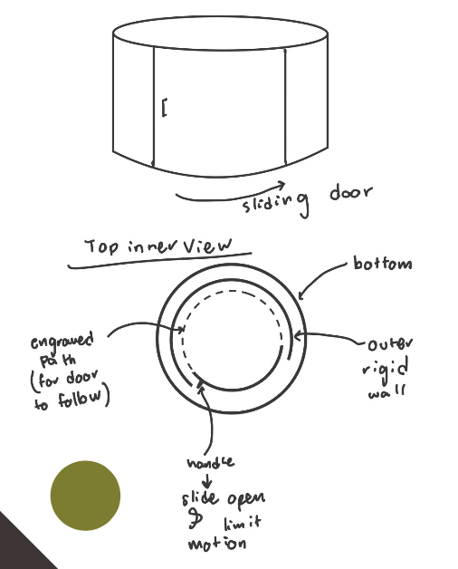
Initial concept featured a kerf-bent cylindrical wall with a sliding door panel. Sketches explored an engraved inner track to guide the door and limit its travel.
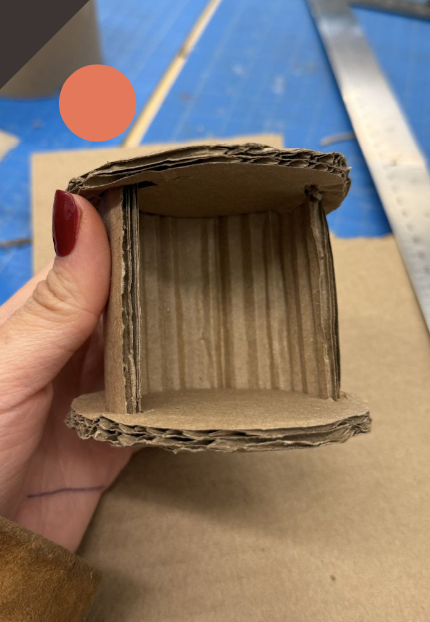
A quick cardboard mock-up revealed the sliding mechanism would be difficult to execute. The sliding door would need an engraved path deep enough to hold the door in place, however creating this path using only friction fits would be impractical.
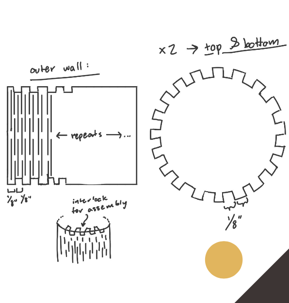
Kept the kerf-bending cylindrical wall concept but replaced the sliding door with a removable friction-fit lid. Reoriented the cylinder to sit upright like an alarm clock, preventing the lid from sliding down.
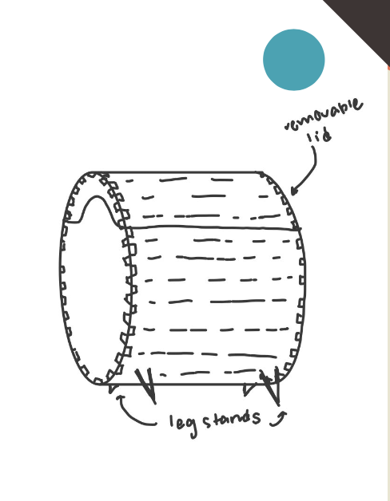
Added decorative leg stands for stability, engraved a clock face on the front panel (to make it pretty, yay!), and refined all interlock fits through iterative kerf testing on scrap material.
CAD & Tolerances
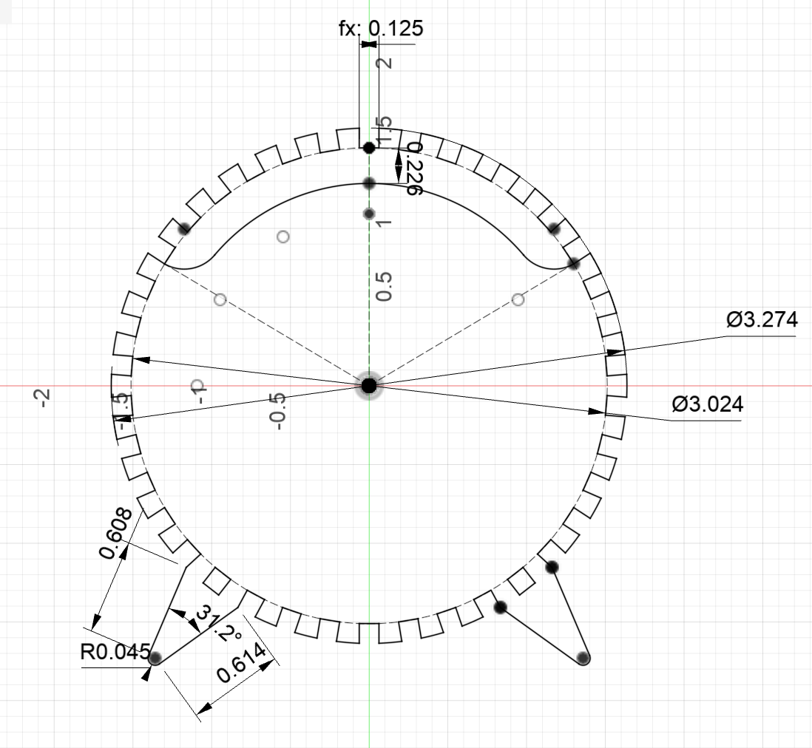
Circular End Caps
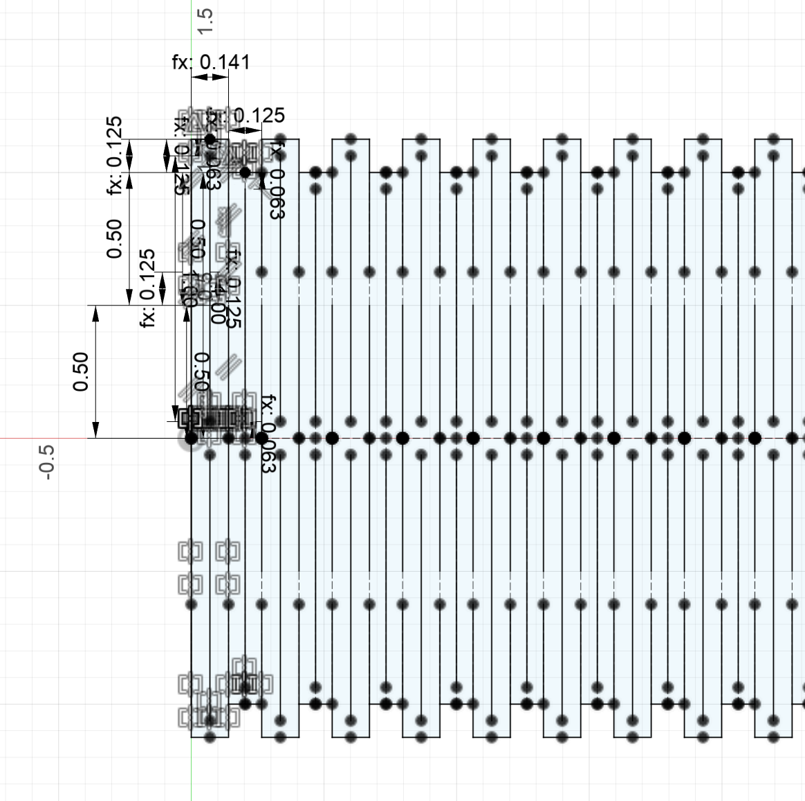
Cylindrical Wrap
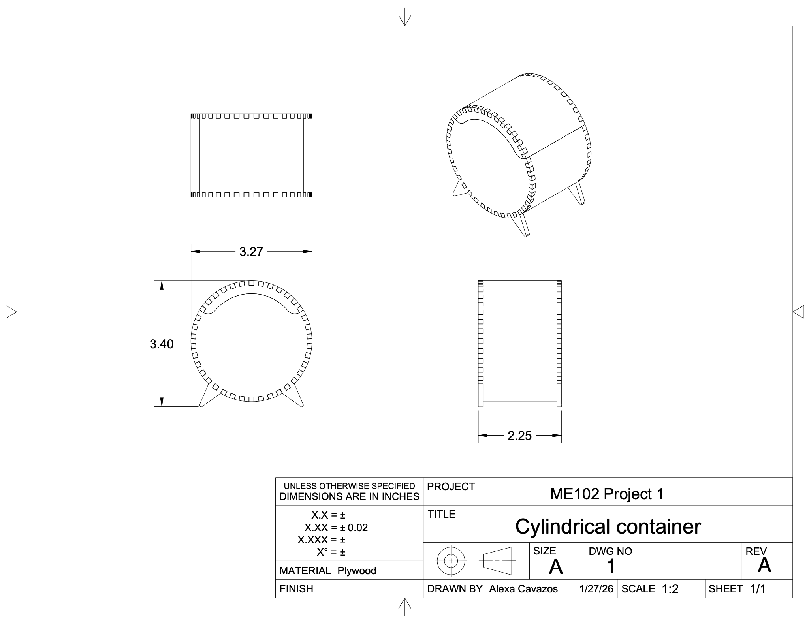
*Drawing meant to show overall dimensions — detail dimensions not meant to be shown to scale.
Final Result
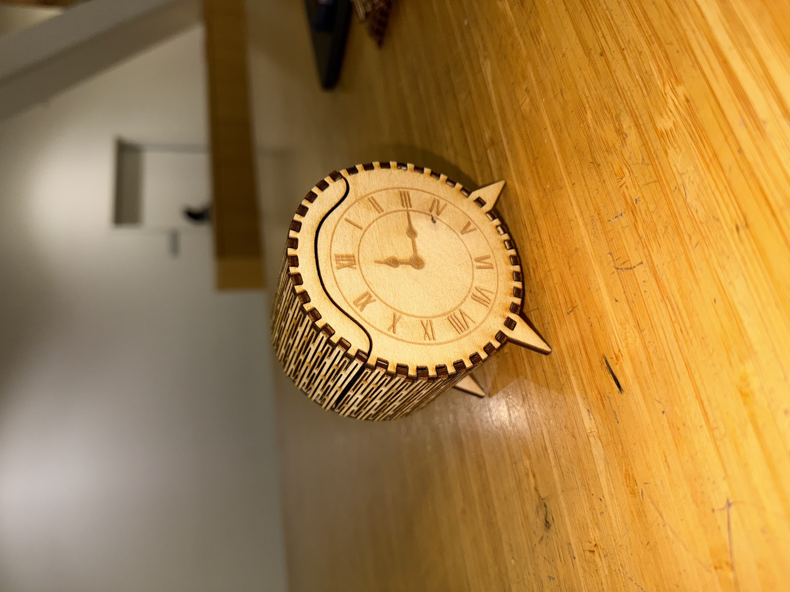

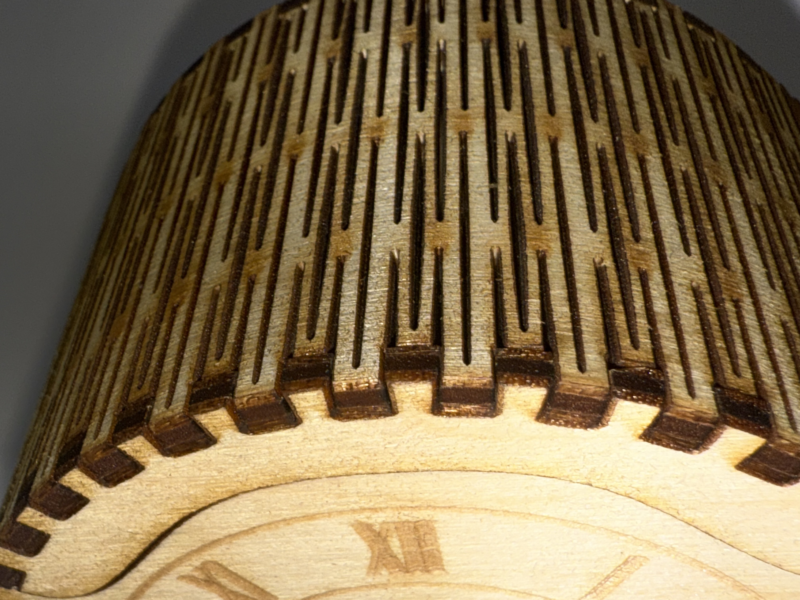
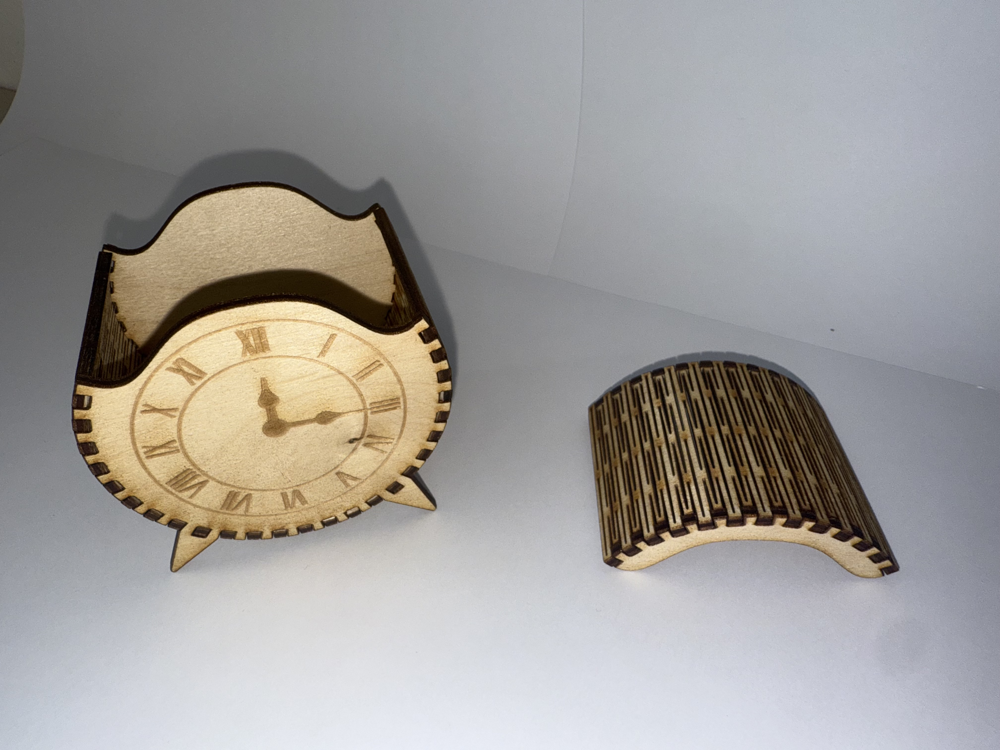

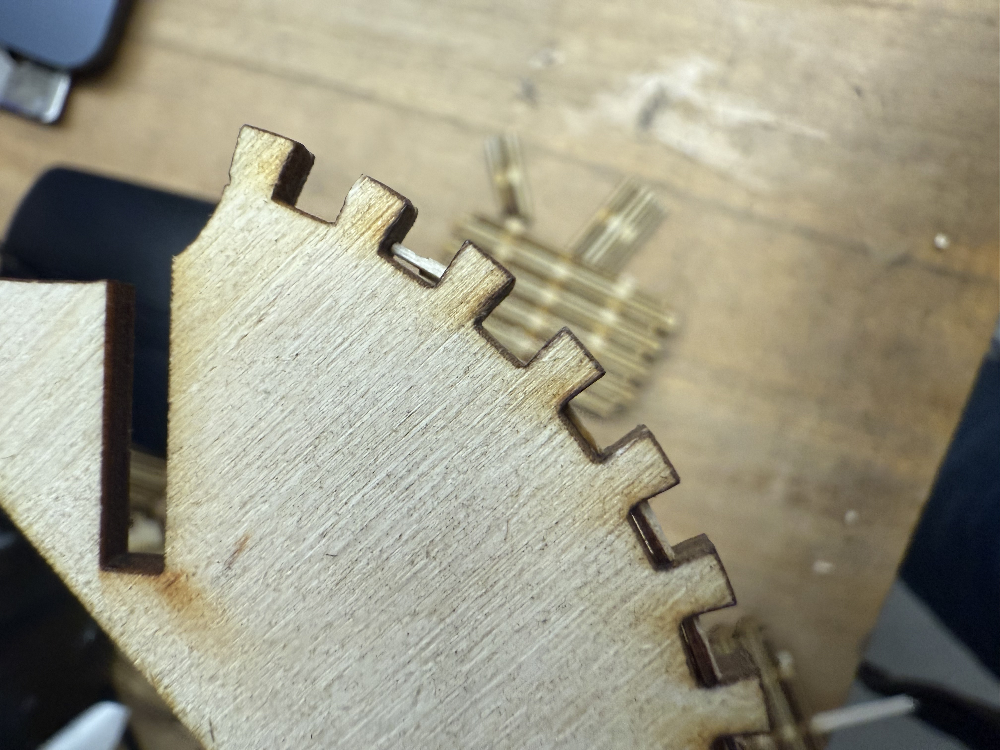
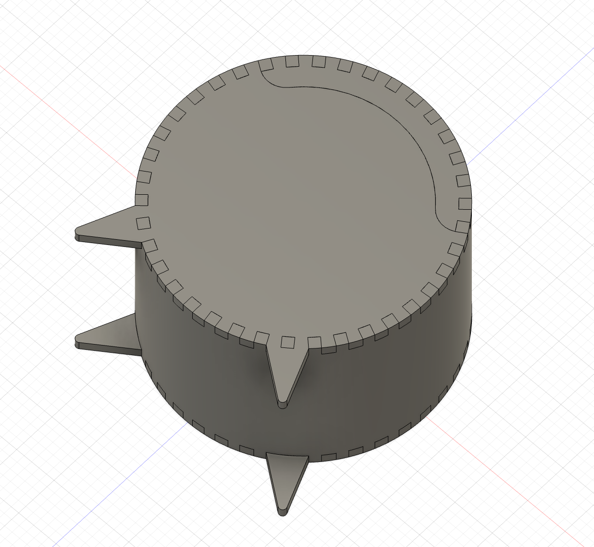
Container with bracelets inside —
the reason it was built